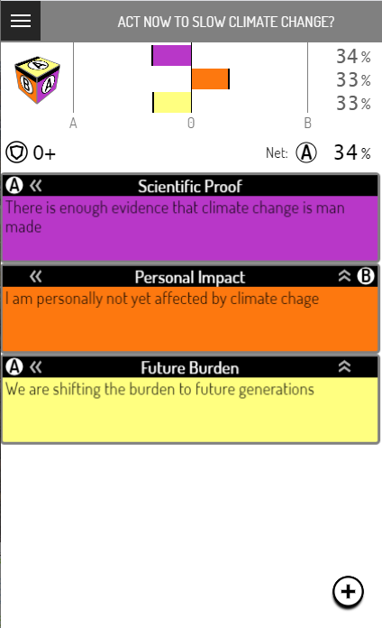

First Application
The relevant part of the first Airport application Votecube has been finished. The application itself is still a prototype (currently running on Firebase) and is yet to get it's long term back-end. But the font end is finished!
Update April 2020 Votecube server development has been fully scoped and temporarily suspended. Instead it will be the first application against which Airport alpha will be tested. It will also be the first app to test cross schema interactions, since it is meant to be embeddable into other applications.